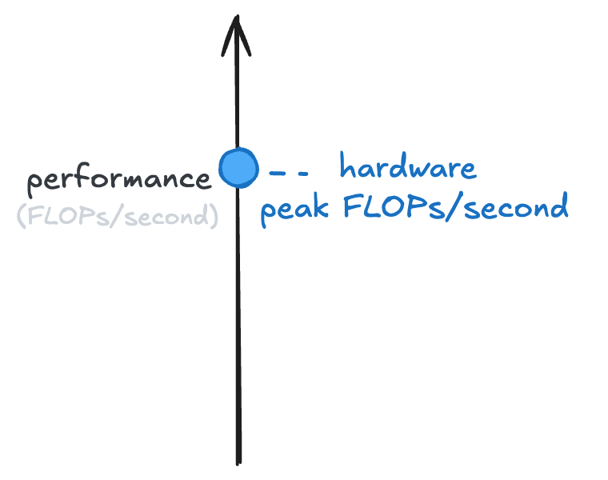
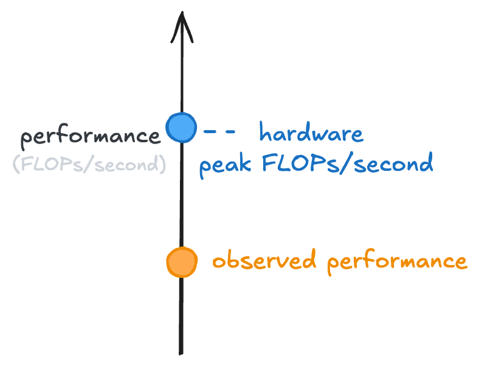
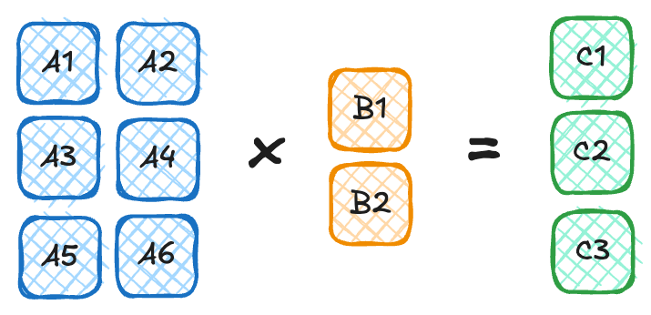
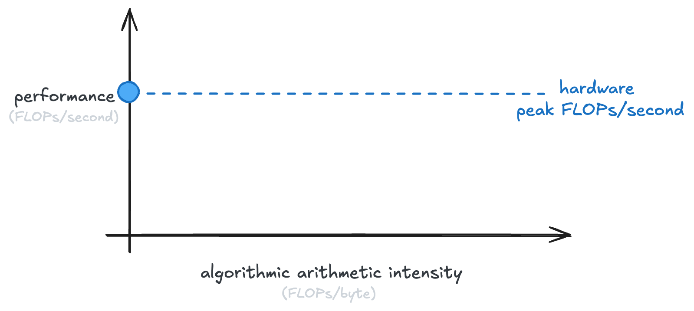
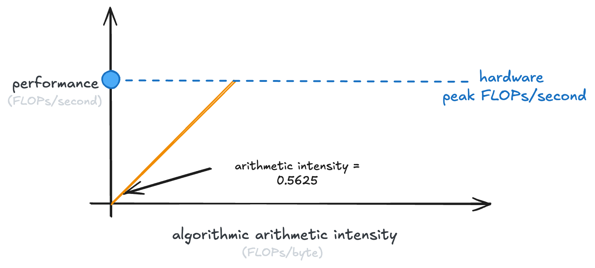
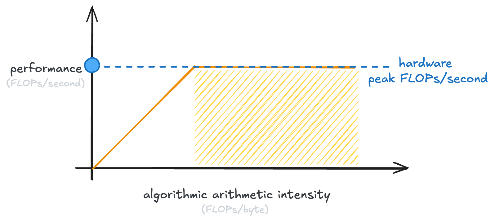
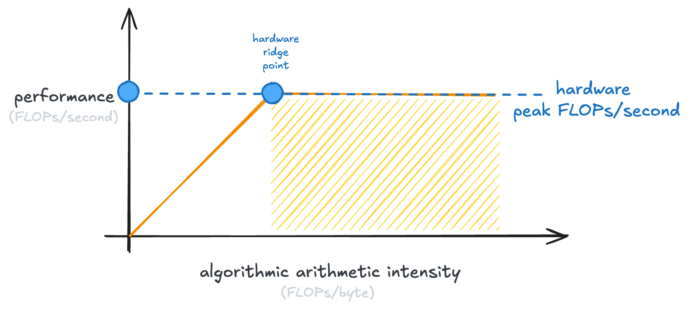
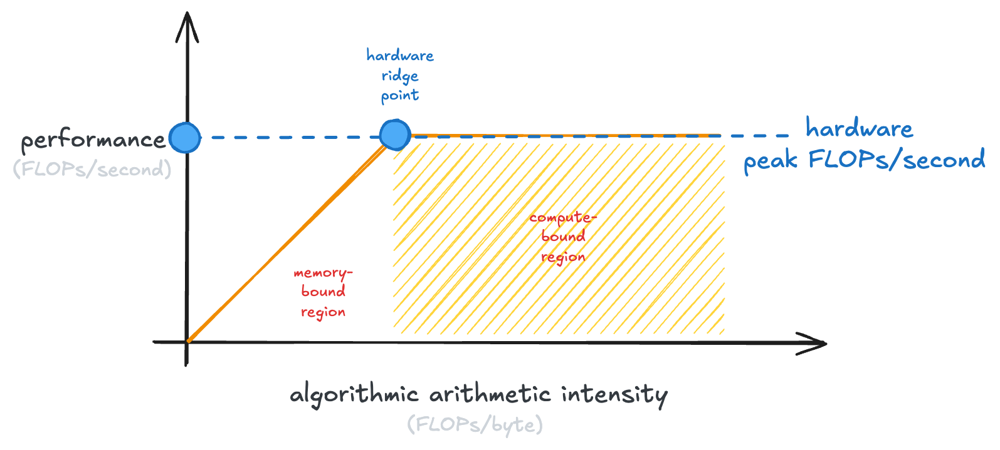
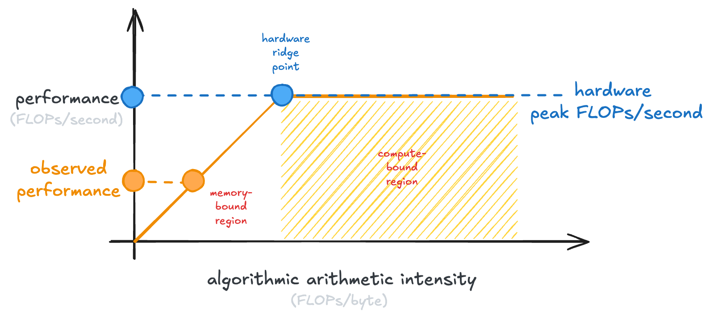
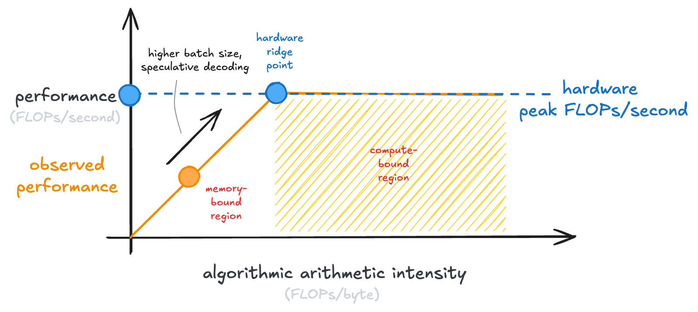

A Visual Guide to the Roofline Model
last updated 2026-06-26
My goal is to convey, as simply and visually as possible: what the roofline model is, what arithmetic intensity is, and why it’s important for making LLMs go fast. By the end of this post, you should be able to define the terms “arithmetic intensity,” “compute bound.” “memory bound,” “memory bandwidth,” and “performance.”
For starters, let’s say that you’ve purchased a shiny new GPU to run your LLMs. You read the data sheet and see two numbers reported: 1. floating point operations per second, which we will refer to as FLOPs/second, and 2. memory bandwidth, measured in gigabytes/second.
Both of these numbers are important, but we’re going to start with FLOPs/second. If we were to put the FLOPs/s on a line, it would look like this:

A better GPU would be further up that line. A worse GPU, or a CPU, would be lower down that line.
Now, you run your local LLM and it feels slow to you. You’re not seeing the tokens-per-second you thought you might. So you come up with a way to measure how many FLOPs/second it’s doing when running your LLM, and it’s lower than you expect:

Let’s dig into why!
To do so, I’m going to define a new term: arithmetic intensity of a computation. It’s going to answer the question “how much of the computation is calculation vs data loading?” The arithmetic intensity of a computation is defined as how many floating point operations happen compared to how many bytes are loaded.
It might feel like a bit of an obtuse thing to measure, so let’s dig into it further. For instance, consider the following matrix-vector multiply:

To do the multiply we have to load in 8 numbers from memory: A1, A2, A3, A4, A5, A6, B1, B2.
If each number is stored as two bytes (i.e., in fp16 or bf16 format) then we’re loading in 16 bytes.
To actually compute their product, remember it’s row-by-column.
The first element of C is the first row of A times the first column of B.
So C1 = A1 * B1 + A2 * B2, and so on for C2 and C3.
Thus, for each element in C, we have to do 3 floating point operations.
Because there are 3 elements in C, we do 3*3 = 9 floating point operations.
That means that the arithmetic intensity of that specific matrix multiply is 9 / 16 = 0.5625.
This gives us a starting point to understand the next plot. If we were multiplying matrices of different shapes, we’d get different arithmetic intensities. (Exercise: convince yourself of this. What’s the arithmetic intensity of squaring a 1000x1000 matrix?)
We want to plot the observed performance of some computation against its arithmetic intensity on our shiny new GPU:

How do we plot the arithmetic intensity against the performance?
Well, remember that our GPU has some memory bandwidth, measured in gigabytes/second.
If we multiply FLOPs / byte (arithmetic intensity) with bytes / second (memory bandwidth), we get performance (FLOPs / second).
So we get an equation: performance = memory bandwidth * arithmetic intensity.
That’s just y = mx + b, with b = 0 and our slop is memory bandwidth!
So we get a line, like the following:

This line is our ceiling. An algorithm can never do better than that.
Now, you’ll note that that line stops at the peak performance of our GPU. Because once we’ve hit that, the GPU just can’t do any more calculations per second.
This is why it’s called the “roofline model”. That is the roof line that we hit:

Every GPU has its own point at which the curve flattens, which is called the “hardware ridge point”:

The shaded part of the graph, where our GPU is saturated in the number of calculations it can do, is called the “compute-bound region.” Examples of compute-bound operations are large matrix multiplies.
The left-hand side of the graph is the “memory-bound region.” Memory-bound operations have saturated the memory bandwidth of our GPU (it couldn’t possibly transfer any more data), but not the ability of the GPU to run calculations.
This plot is the full roofline model:

Now, how does it related to our issue earlier, where we weren’t getting good enough performance from our local LLM?

Well, it turns out that LLM inference, at small batch sizes like you might run locally, is actually memory-bound. You can conceptually simplify an LLM forward pass (which generates one token) as a single matrix-vector multiply. The size of this matrix is just “the number of parameters in the LLM.”
So if you’re running a 30B model, you need to load 60GB of weights in fp16, just to perform roughly ~60B floating point operations, an arithmetic intensity of just ~1 FLOP/byte.
There is a ton of inference engineering work to bridge this gap and make inference more compute bound! A few tricks include: increasing batch size and speculative decoding, where you’re doing forward passes of multiple tokens from a draft model:

And that’s all there is to it! It’s just a way to reason about if a computation is stuck loading data or stuck running calculations. And based on that reasoning, what knobs you can turn to speed it up.If you’re interested in learning more, a few good resources would be:
- Modal’s GPU Glossary
- Philip Kiely’s Inference Engineering (you can read my review of the book here)